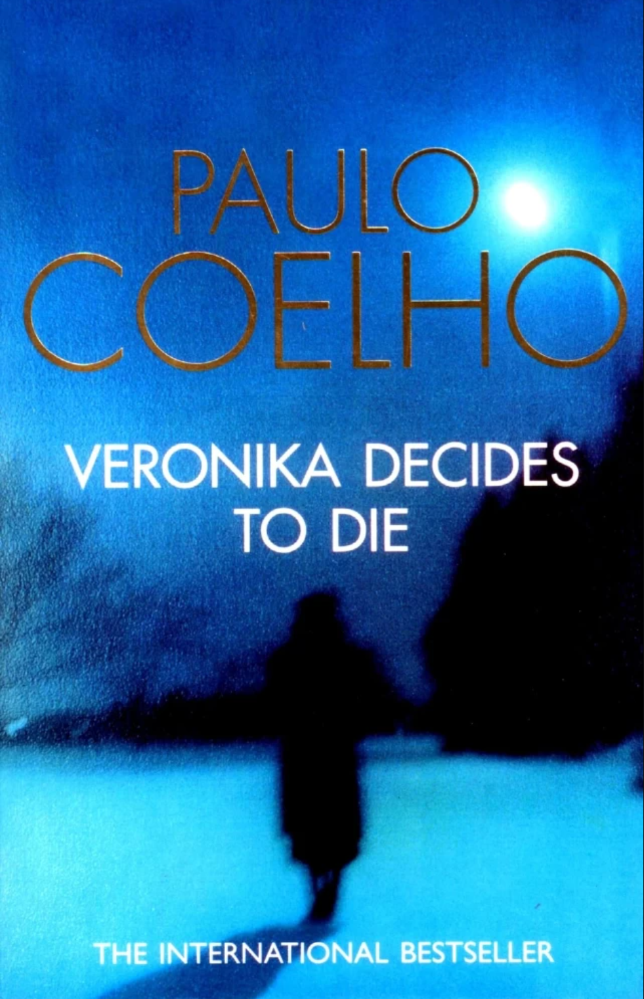
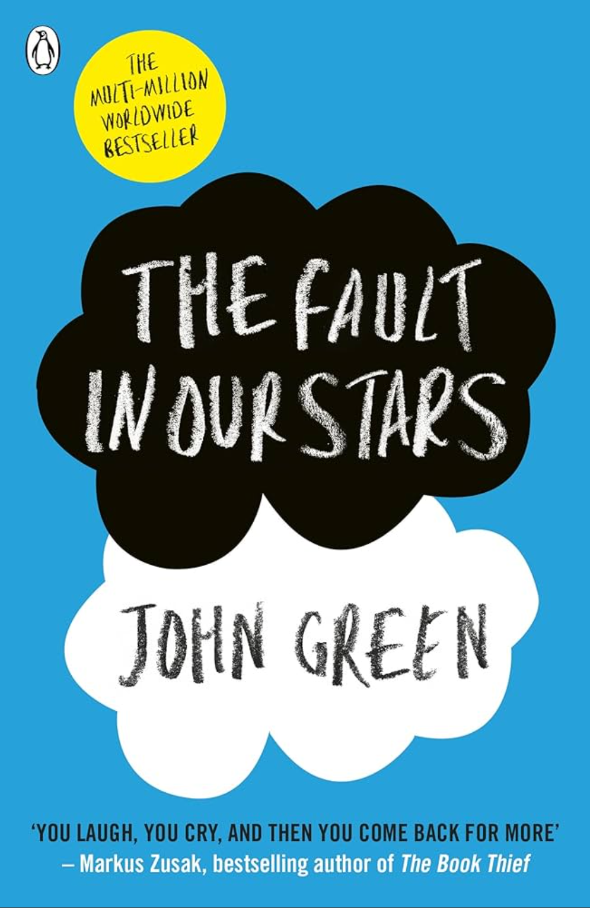
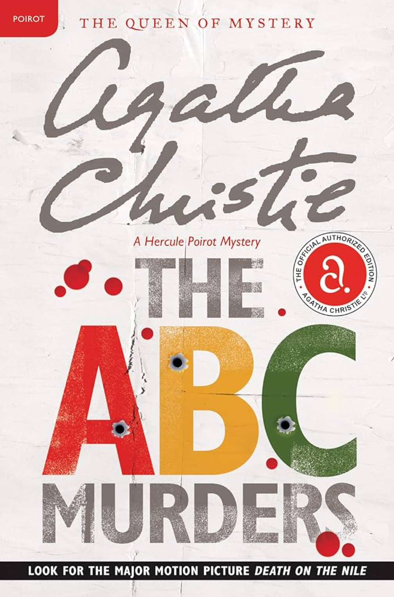

|  |
Book Name: Veronica Decides to Die Review:The gruesome sounding title will push many away, but the few that open the book and give it a chance may come out with a new perspective on mental health and life. Veronika Decides to Die is a book written by Paulo Coelho, the author of the New York Times best seller, ‘The Alchemist’. This book is a realistic fiction book that follows a woman named Veronika. Veronika lives in Romania and is unhappy with her life. She isn’t sad, mad, angry or even happy. She feels numb and pointless. So, she decides to attempt to take her own life in the form of an overdose of sleeping pills. Not everything went to plan though. She wakes up in a mental hospital and is soon informed that she lived through the night but only has a week until her heart fails and kills her. This story is about Veronika figuring out the true meaning of life, her emotions and her purpose inside of a mental hospital among many people who are labeled as mentally insane. Along the way she meets many influential characters. Let’s talk a bit about the author, Paulo Coelho, first. Paulo Coelho has written many interesting and thought provoking books that tell stories of life and ideas of life through fictional characters and their journey. Paulo Coelho has a special connection to the main character of this book though because he was put into a similar situation as Veronika. His parents made him go in and out of mental hospitals because they didn’t understand how he could want to be a writer and artist for a living and thought he was literally insane because of it. But now let’s talk about the book. This book was insanely good. I personally learned a lot of new perspectives about society and philosophy from this book. It talks and teaches about finding yourself and overcoming your ego through the situations that Veronika goes through. As the story goes on and on Veronika starts to live life more freely. After all, she’s in an insane asylum, and you can do anything you want there without people being surprised or thinking you’re weird. They already think that you’re insane. So, the overall theme and message of this story is a very good one about accepting the pain of life, enjoying it and not holding yourself back from how you feel and what you feel is right. |
|  |
Book Name: The Fault in Our Stars Review:In The Fault In Our Stars by John Green, he builds a story out of darkness and despair. He takes the tragedy of cancer and immerses us in the lives of characters that could very well be real. Many know of the heartaches in dealing with those who fight the fight, and many of those scars last a lifetime. He brings his story in the form of a teen girl, Hazel Lancaster. Stricken with cancer from a young age, she believes she has come to terms with what her life has become. Then she meets a young man, Augustus Waters, a survivor of cancer. He is drawn to her in a way that is initially uncomfortable, and as she tries to push him away in her sarcastic vein, he finds her to be exactly the type of girl he has been looking for. Throughout the story there is a beauty and humor, a 'candle in the wind' for each of those whose lives have been touched by such an uncaring disease. For cancer touches not just the victim but all those who love and are in anyway touched by them.Be prepared for a story of romance and anger, excitement and humor, and friendship and bravery for that is the direction we are led as Green develops the personality of a group of teens that have the courage to bring both laughter and tears. The stories that encircle each individual give you a glimpse of the character and daring as well as abiding hope. Hidden within that strength they also hide the depression and hopelessness as they try hard to protect their family and friends by showing only the smiles and strength whenever possible.Written so beautifully your heart and emotions melt, you come to be a part of this group as well as their families, their triumphs, and their losses. The friendships as well as the depths the families go through preparing for the worst while holding out hope is like a beacon of light.The courage and humor, the energy and despair all keep you on a roller coaster of emotion. Green takes you on a journey both terrible and beautiful.While a difficult book to categorize I found it to be one of the most important finds of the last few years. Green shines a light on cancer in a way that sends a tremor of intent awareness, an incandescent monument to those that have both won and lost the fight, as well as the damage done to those closest. The story blasts away the veil of secrecy and hooks you from the very beginning. |
|  |
Book Name: The ABC Murders Review:I’ve said it before and I’ll say it again, Agatha Christie is a sure-fire way to cure your bookish blues.The thing about serial killers is that they tend to be formulaic. They generally don’t pick their victims at random and will have a reason for everything they do. Whether it’s a shared trait, something in their history, or a gender issue, serial killers take care to pick the right person to kill. Except, it seems, ABC in Agatha Christie’s mystery. When the bodies start appearing, it looks as though the only thing the deceased have in common is that they were killed. The killer doesn’t even choose the same method to murder them all. Thankfully retired detective, Hercule Poirot is on hand to help solve the case with his old friends Colonel Hastings and Chief Inspector Japp. This isn’t the first time that Hercule has been convinced to come out of retirement to track down a killer. He does so now because he starts to receive letters from the killer announcing his crimes in advance. The first letter informs Poirot that a crime will be committed soon. On the day in question, Alice Ascher is killed in her tobacco shop in Andover. Alongside the body, the police find a copy of the ABC Rail Guide, which Poirot sees as an obvious link to his letter writer. The next murders are waitress Betty Barnard on the beach at Bexhill and Sir Carmichael Clarke at his home in Churston. It’s clear that a pattern is emerging. Can Poirot figure out the puzzle before the killer gets to D? Obviously, it’s not just the structure that makes this so pleasing. The actual mystery is one of her more intricate puzzles. It might not offer the most unsolvable mystery ever but Christie does everything she can to cover up the truth. There are plenty of great red herrings and the ABC aspect really takes you on a journey. She’s certainly written more mind-blowing twists before but this is still a memorable ending. And talk about red herrings. I guess this is pretty iconic in its own way. More than any other Poirot mystery, the journey is what’s important here. Watching the great Belgian take on a mysterious serial killer is exciting and gives him a real Moriarty-esque nemesis. |